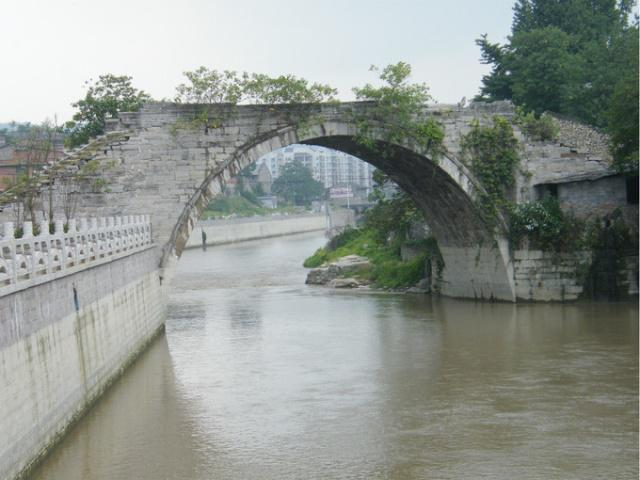
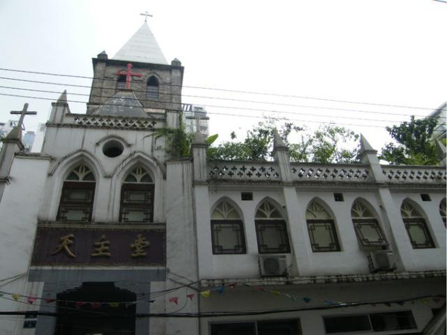

南川的古桥
历史悠久的龙济古桥，始建于清康 熙十八年（1679年），
重建于清乾隆五十七年（1792年），该桥位于县城西一公里，
南川区西城街道办事处侧面东南～西北走向，石结构单孔拱桥，
桥面长22米、宽7.6米、高10米、跨度19.2米、拱高9米、桥栏高1.4米，
桥头引桥为三十级素面阶梯踏道，是保留较好年代较早的古桥。

南川的宗教
百年天主教堂，1720年（康熙五十八年）天主教传入南川，
1827年（道光七年）在县城后街设点传教，1864年（同治三年）
在县城杨泗桥设经堂，1904年（光绪二十九年）在龙化镇建耶稣圣心堂，
1911年（道光末年）撤除建成现在的砖木结构仿哥特式教堂，
占地4500余平方米，教堂建筑面积540平方米，附属房屋10余间，
钟楼高耸曾经安装法国造时钟，报时声全县城可闻，
1913年教堂及附属房屋竣工，重庆代牧区主教舒福隆主持圣堂，
该堂奉耶稣圣心为主保，故名南川耶稣圣心堂。
